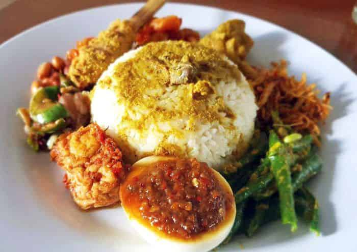

Ayam Geprek Mozzarella
Rp. 15.000
Ayam geprek dengan sambal merah ditambah topping mozzarella.

Nasi Campur
Rp. 12.000
Nasi dengan berbagai macam lauk dan sayuran.

Kwetiau Goreng
Rp. 17.000
Kwetiau goreng dengan bumbu spesial dan irisan ayam.

Nasi Kuning
Rp. 10.000
Nasi kuning dengan telur, ayam suwir, dan sambal.